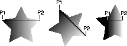

| CONTENTS | PREV | NEXT | Java 2D API |
To configure the Graphics2D context for rendering, you use the Graphics2D set methods to specify attributes such as the RenderingHints, Stroke, Paint, clipping path, Composite, and Tra nsform.
A RenderingHints object encapsulates all of your preferences concerning how an object is rendered. To set the rendering hints in the Graphics2D context, you create a RenderingHints object and pass it into Graphics2D.s etRenderingHints.Setting a rendering hint does not guarantee that a particular rendering algorithm will be used: not all platforms support modification of the rendering mode.
In the following example, antialiasing is enabled and the rendering preference is set to quality:
qualityHints = new
RenderingHints(RenderingHints.KEY_ANTIALIASING,
RenderingHints.VALUE_ANTIALIAS_ON);
qualityHints.put(RenderingHints.KEY_RENDERING,
RenderingHints.VALUE_RENDER_QUALITY);
g2.setRenderingHints(qualityHints);
A BasicStroke defines the characteristics applied to a Shape's outline, including its width and dashing pattern, how line segments are joined together, and the decoration (if any) applied to the end of a line. To set the stroke a ttributes in the Graphics2D context, you create a BasicStroke object and pass it into setStroke.
To set the stroke width, you create a BasicStroke object with the desired width and call setStroke.In the following example, the stroke width is set to twelve points and the defaults are used for the join and endcap decorations:
wideStroke = new BasicStroke(12.0f); g2.setStroke(wideStroke);
To set the join and endcap styles, you create a BasicStroke object with the desired attributes.In the following example, the stroke width is set to twelve points and the round join and endcap styles are used instead of the defaults:
roundStroke = new BasicStroke(4.0f, BasicStroke.CAP_ROUND,
BasicStroke.JOIN_ROUND);
g2.setStroke(roundStroke);
Complex dashing patterns can easily be defined with a BasicStroke object. When you create a BasicStroke object, you can specify two parameters that control the dashing pattern:
In the following example, two different dashing patterns are applied to a line. In the first, the size of the dashes and the space between them is constant. The second dashing pattern is more complex, using a six-element array to define the dashing patter n.
float dash1[] = {10.0f};
BasicStroke bs = new BasicStroke(5.0f, BasicStroke.CAP_BUTT,
BasicStroke.JOIN_MITER, 10.0f, dash1, 0.0f);
g2.setStroke(bs);
Line2D line = new Line2D.Float(20.0f, 10.0f, 100.0f, 10.0f);
g2.draw(line);
float[] dash2 = {6.0f, 4.0f, 2.0f, 4.0f, 2.0f, 4.0f};
bs = new BasicStroke(5.0f, BasicStroke.CAP_BUTT,
BasicStroke.JOIN_MITER, 10.0f, dash2, 0.0f);
g2.setStroke(bs);
g2.draw(line);
Both dashing patterns use a dash phase of zero, causing the dashes to be drawn starting at the beginning of the dashing pattern. The two dashing patterns are shown in Figure 2-7.
The Paint attribute in the Graphics2D context determines the fill color or pattern that is used when text and Shapes are rendered.
The GradientPaint class provides an easy way to fill a shape with a gradient of one color to another. When you create a GradientPaint, you specify a beginning position and color, and an ending position and color. The fill color chang es proportionally from one color to the other along the line connecting the two positions, as shown in Figure 2-8.
In the third star in Figure 2-8, both points lie within the shape. All of the points along the gradient line extending beyond P1 take the beginning color, and the points along the gradient line extending beyond P2 take the ending color.To fill a shape with a gradient of one color to another:
In the following example, a rectangle is filled with a blue-green gradient.
GradientPaint gp = new GradientPaint(50.0f, 50.0f, Color.blue
50.0f, 250.0f, Color.green);
g2.setPaint(gp);
g2.fillRect(50, 50, 200, 200);
The TexturePaint class provides an easy way to fill a shape with a repeating pattern. When you create a TexturePaint, you specify a BufferedImage to use as the pattern. You also pass the constructor a rectangle to define t he repetition frequency of the pattern, as shown in Figure 2-9.
To fill a shape with a texture:
In the following example, a rectangle is filled with a simple texture created from a buffered image.
// Create a buffered image texture patch of size 5x5
BufferedImage bi = new BufferedImage(5, 5,
BufferedImage.TYPE_INT_RGB);
Graphics2D big = bi.createGraphics();
// Render into the BufferedImage graphics to create the texture
big.setColor(Color.green);
big.fillRect(0,0,5,5);
big.setColor(Color.lightGray);
big.fillOval(0,0,5,5);
// Create a texture paint from the buffered image
Rectangle r = new Rectangle(0,0,5,5);
TexturePaint tp = new
TexturePaint(bi,r,TexturePaint.NEAREST_NEIGHBOR);
// Add the texture paint to the graphics context.
g2.setPaint(tp);
// Create and render a rectangle filled with the texture.
g2.fillRect(0,0,200,200);
To define a clipping path:
To shrink the clipping path:
In the following example, a clipping path is created from an ellipse and then modified by calling clip.
public void paint(Graphics g) {
Graphics2D g2 = (Graphics2D) g;
// The width and height of the canvas
int w = getSize().width;
int h = getSize().height;
// Create an ellipse and use it as the clipping path
Ellipse2D e = new Ellipse2D.Float(w/4.0f,h/4.0f,
w/2.0f,h/2.0f);
g2.setClip(e);
// Fill the canvas. Only the area within the clip is rendered
g2.setColor(Color.cyan);
g2.fillRect(0,0,w,h);
// Change the clipping path, setting it to the intersection of
// the current clip and a new rectangle.
Rectangle r = new Rectangle(w/4+10,h/4+10,w/2-20,h/2-20);
g2.clip(r);
// Fill the canvas. Only the area within the new clip
// is rendered
g2.setColor(Color.magenta);
g2.fillRect(0,0,w,h);
}
To transform a Shape, text string, or Image you add a new AffineTransform to the transformation pipeline in the Graphics2D context before rendering. The transformation is applied when the graphic object is rende red.For example, to draw a rectangle that is rotated 45 degrees:
In the following example, an instance of AffineTransform is used to rotate a rectangle 45 degrees when it is rendered.
Rectangle2D rect = new Rectangle2D.Float(1.0,1.0,2.0,3.0); AffineTransform rotate45 = AffineTransform.getRotateInstance(Math.PI/4.0,0.0,0.0) g2.setTransform(rotate45); g2.draw(rect);
In this example, an AffineTransform is used to rotate a text string around a center point:
// Define the rendering transform
AffineTransform at = new AffineTransform();
// Apply a translation transform to make room for the
// rotated text.
at.setToTranslation(400.0, 400.0);
g2.transform(at);
// Create a rotation transform to rotate the text
at.setToRotation(Math.PI / 2.0);
// Render four copies of the string "Java" at 90 degree angles
for (int i = 0; i < 4; i++) {
g2.drawString("Java", 0.0f, 0.0f);
g2.transform(at);
}
You can transform an image in the same way--the transform in the Graphics2D context is applied during rendering regardless of the type of graphic object being rendered.To apply a transform to an image without changing the transform in the Graphics2D context, you can pass an AffineTransform to drawImage:
AffineTransform rotate45 = AffineTransform.getRotateInstance(Math.PI/4.0,0.0,0.0) g2.drawImage(myImage, rotate45);
Transforms can also be applied to a Font to create a modified version of the Font, for more information see "Creating Font Derivations".
An AlphaComposite encapsulates composition rules that determine how colors should be rendered when one object overlaps another. To specify the composition style for the Graphics2D context, you create an AlphaComposite and pass it into setComposite. The most commonly used is composition style is SRC_OVER.
The SRC_OVER compositing rule composites the source pixel over the destination pixel such that the shared pixel takes the color of the source pixel. For example, if you render a blue rectangle and then render a red rectangle that partially overlaps it, the overlapping area will be red. In other words, the object that is rendered last will appear to be on top.To use the SRC_OVER composition rule:
Once the composite object is set, overlapping objects will be rendered using the specified composition rule.
- Create an AlphaComposite object by calling getInstance and specifying the SRC_OVER rule.
AlphaComposite ac = AlphaComposite.getInstance(AlphaComposite.SRC_OVER);- Call setComposite to add the AlphaComposite object to the Graphics2D context.
g2.setComposite(ac);
AlphaComposite allows you to specify an additional constant alpha value that is multiplied with the alpha of the source pixels to increase transparency.For example, to create an AlphaComposite object that renders the source object 50% transparent, specify an alpha of .5:
AlphaComposite ac = AlphaComposite.getInstance(AlphaComposite.SRC_OVER, .5f);
In the following example, a source over alpha composite object is created with an alpha of .5 and added to the graphics context, causing subsequent shapes to be rendered 50% transparent.
public void paint(Graphics g) {
Graphics2D g2 = (Graphics2D) g;
g2.setColor(Color.red);
g2.translate(100,50);
// radians=degree * pie / 180
g2.rotate((45*java.lang.Math.PI)/180);
g2.fillRect(0,0,100,100);
g2.setTransform(new AffineTransform()); // set to identity
// Create a new alpha composite
AlphaComposite ac =
AlphaComposite.getInstance(AlphaComposite.SRC_OVER,0.5f);
g2.setComposite(ac);
g2.setColor(Color.green);
g2.fillRect(50,0,100,100);
g2.setColor(Color.blue);
g2.fillRect(125,75,100,100);
g2.setColor(Color.yellow);
g2.fillRect(50,125,100,100);
g2.setColor(Color.pink);
g2.fillRect(-25,75,100,100);
}